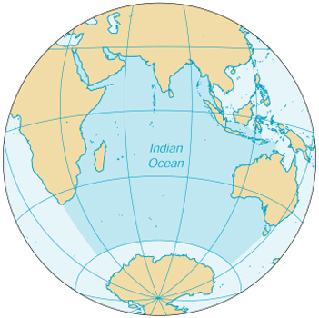

| Indian Ocean |
|
|
 | |
| Introduction |
Background: A spring 2000 decision by the International Hydrographic Organization delimited a fifth world ocean from the southern portions of the Atlantic Ocean, Indian Ocean, and Pacific Ocean. The new ocean extends from the coast of Antarctica north to 60 degrees south latitude which coincides with the Antarctic Treaty Limit. The Indian Ocean remains the third-largest of the world's five oceans (after the Pacific Ocean and Atlantic Ocean, but larger than the Southern Ocean and Arctic Ocean).
| Geography |
Location: body of water between Africa, the Southern Ocean, Asia, and Australia
Geographic coordinates: 20 00 S, 80 00 E
Map references: World
Area:
total:
68.556 million sq km
note:
includes Andaman Sea, Arabian Sea, Bay of Bengal, Great Australian Bight, Gulf of Aden, Gulf of Oman, Mozambique Channel, Persian Gulf, Red Sea, Strait of Malacca, and other tributary water bodies
Area - comparative: about 5.5 times the size of the US
Coastline: 66,526 km
Climate: northeast monsoon (December to April), southwest monsoon (June to October); tropical cyclones occur during May/June and October/November in the northern Indian Ocean and January/February in the southern Indian Ocean
Terrain: surface dominated by counterclockwise gyre (broad, circular system of currents) in the southern Indian Ocean; unique reversal of surface currents in the northern Indian Ocean; low atmospheric pressure over southwest Asia from hot, rising, summer air results in the southwest monsoon and southwest-to-northeast winds and currents, while high pressure over northern Asia from cold, falling, winter air results in the northeast monsoon and northeast-to-southwest winds and currents; ocean floor is dominated by the Mid-Indian Ocean Ridge and subdivided by the Southeast Indian Ocean Ridge, Southwest Indian Ocean Ridge, and Ninetyeast Ridge
Elevation extremes:
lowest point:
Java Trench -7,258 m
highest point:
sea level 0 m
Natural resources: oil and gas fields, fish, shrimp, sand and gravel aggregates, placer deposits, polymetallic nodules
Environment - current issues: endangered marine species include the dugong, seals, turtles, and whales; oil pollution in the Arabian Sea, Persian Gulf, and Red Sea
Geography - note: major chokepoints include Bab el Mandeb, Strait of Hormuz, Strait of Malacca, southern access to the Suez Canal, and the Lombok Strait
| Government |
Data code: none; the US Government has not approved a standard for hydrographic codes - see the Cross-Reference List of Hydrographic Codes appendix
| Economy |
Economy - overview: The Indian Ocean provides major sea routes connecting the Middle East, Africa, and East Asia with Europe and the Americas. It carries a particularly heavy traffic of petroleum and petroleum products from the oilfields of the Persian Gulf and Indonesia. Its fish are of great and growing importance to the bordering countries for domestic consumption and export. Fishing fleets from Russia, Japan, South Korea, and Taiwan also exploit the Indian Ocean, mainly for shrimp and tuna. Large reserves of hydrocarbons are being tapped in the offshore areas of Saudi Arabia, Iran, India, and western Australia. An estimated 40% of the world's offshore oil production comes from the Indian Ocean. Beach sands rich in heavy minerals and offshore placer deposits are actively exploited by bordering countries, particularly India, South Africa, Indonesia, Sri Lanka, and Thailand.
| Transportation |
Ports and harbors: Calcutta (India), Chennai (Madras; India), Colombo (Sri Lanka), Durban (South Africa), Jakarta (Indonesia), Melbourne (Australia), Mumbai (Bombay; India), Richards Bay (South Africa)
| Transnational Issues |
Disputes - international: some maritime disputes (see littoral states)